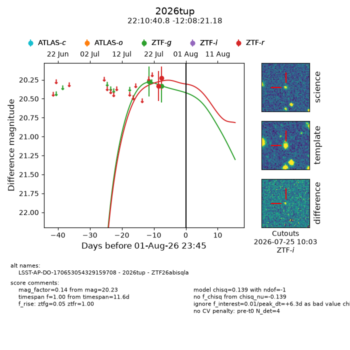
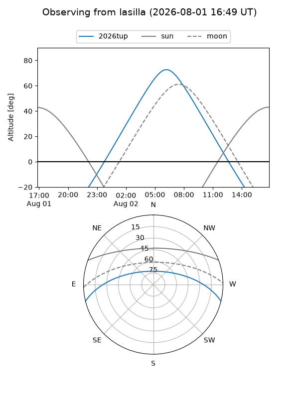
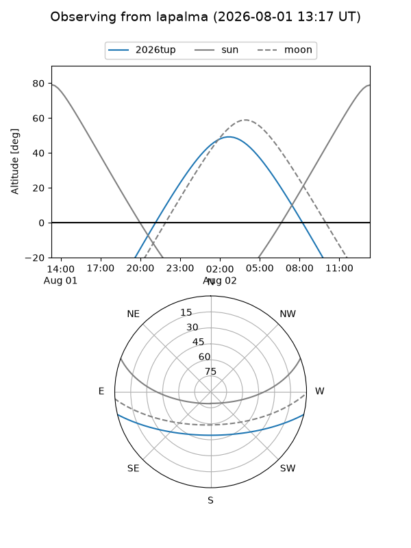
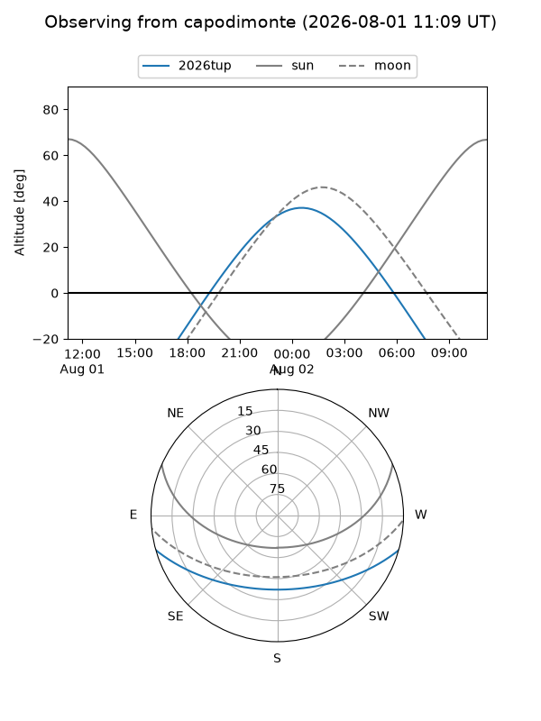
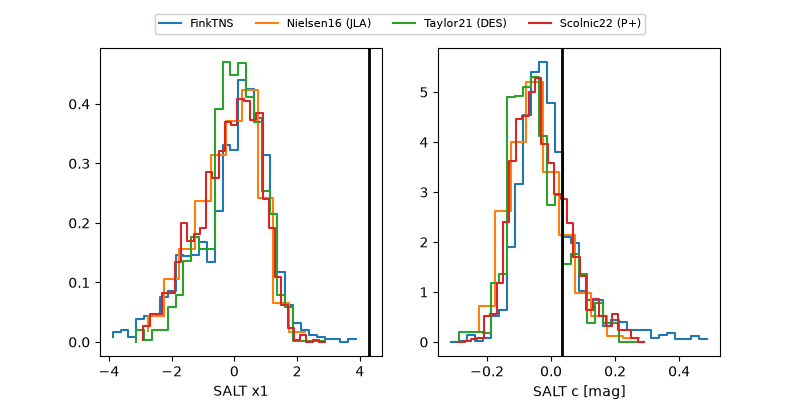

2026tup
Target 2026tup at 2026-08-02 11:22
Aliases and brokers:
FINK-ZTF: ztf.fink-portal.org/ZTF26abisqla
Lasair-ZTF: lasair-ztf.lsst.ac.uk/objects/ZTF26abisqla
ALeRCE-ZTF: alerce.online/object/ZTF26abisqla
YSE-PZ: ziggy.ucolick.org/yse/transient_detail/2026tup
TNS name: wis-tns.org/object/2026tup
Direct TNS query: direct search
alt names
ZTF26abisqla (ztf,fink_ztf)
2026tup (tns,yse)
LSST-AP-DO-170653054329159708 (iau_lsst)
Coordinates:
equatorial (ra, dec) = 332.6701,-12.13922
equatorial (HMS+DMS) = 22:10:40.82,-12:08:21.18
galactic (l, b) = (46.5974,-49.51370)
Flags:
TNS type: nan
peak dt: +6.8
Photometry:
last ztfg=20.33, ztfr=20.23
2 ztfg, 2 ztfr detections
Lightcurve

Visibility



Additional plots
